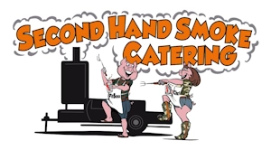
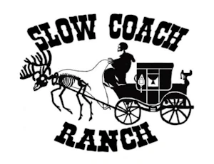

Warriors with Hearts
FORTIFYING THE HEARTS THAT BORE THE BURDEN
Outdoor, recreational, and family opportunities for Purple Heart recipients.
Possible thanks to the support of our
sponsors and partners.
Warriors with Hearts Gallery
Mission Moments
01 / 27
Limited-Time Fundraiser
Donation Raffle
Help support Warriors with Hearts and view the current raffle flyer for prize details, ticket cost, and drawing information.
Purpose Statement
Mission: The primary mission of Warriors with Hearts is to provide outdoor, recreational, peer to peer support, and family retreat opportunities to Purple Heart recipients and their families residing in the state of Texas. We further support this mission through educational initiatives, humanitarian support efforts, Family support and conservation stewardship programs within the State of Texas.
Vision: We aim to promote the physical, mental, and emotional well-being of wounded veterans and to support their rehabilitation and quality of life. Through guided outdoor experiences and short-term visitation retreats, Warriors with Hearts seeks to foster camaraderie and restore a sense of purpose. By extending these opportunities to their families, the organization envisions strengthening family bonds, encouraging shared experiences, and recognizing the vital role loved ones play in the recovery and resilience of our nation’s heroes.
Core Values
- Honor & Respect: We honor the sacrifice and courage of Purple Heart recipients and all veterans by treating them and their families with the dignity, gratitude, and respect they deserve.
- Service Before Self: Guided by the spirit of military service, we commit ourselves to serving veterans and their communities with humility, dedication, and compassion.
- Compassion in Action: We believe humanitarian support must be tangible. Through outreach, assistance programs, and community partnerships, we actively work to improve the lives of veterans and those in need.
- Integrity & Accountability: We operate with transparency, honesty, and responsible stewardship of resources to ensure our mission genuinely benefits those we serve.
- Community & Unity: We foster strong relationships among veterans, families, volunteers, and supporters, creating a network where no veteran feels forgotten or alone.
- Empowerment & Hope: We strive to empower veterans to thrive beyond their service by providing opportunities, support systems, and resources that promote independence and renewed purpose.
- Legacy of Service: Inspired by the sacrifices of Purple Heart recipients, we aim to continue their legacy by supporting humanitarian causes and strengthening communities.
Board of Directors
Meet the leadership team helping guide Warriors with Hearts. Select a board member to view their full portrait and biography.
Warriors with Hearts Initiatives
We have a committed and talented team of people who will work to ensure this year is another success.
2026 Purple Hearts Hunt
Four Texas Purple Heart recipients are invited to a four-day, three-night hunt in Ballinger, Texas.
Warriors with Hearts is building the annual 2026 Purple Hearts Hunt for four Texas Veterans who are Purple Heart recipients. This will be the 17th year Purple Heart Hunters will have the opportunity to hunt, eat and sleep on a ranch in Ballinger Texas, free of charge for four days and three nights on November 12-15, 2026.
Such hunts at these ranches have been shown to promote a sense of ability, increase independence, and encourage hunters and families to embrace and temporarily escape the wounds received in conflict.
Family Retreat
All-inclusive retreats help Purple Heart recipients and loved ones reconnect, rest, and build lasting memories.
Our non-profit provides a family retreat dedicated to honoring Purple Heart recipients and their loved ones, fostering a space for healing beyond combat injuries. These all-inclusive, stress-free escapes allow combat-wounded veterans to reconnect with family members, share experiences with peers, and build lasting, positive memories. Through tailored recreational activities and supportive environments, we focus on strengthening family bonds and promoting a renewed sense of purpose. We are committed to fostering a supportive community that serves those who sacrificed so much for our nation.
Peer to Peer Mentorship
Veteran-to-veteran mentorship creates a secure place to share experience, support recovery, and reduce isolation.
Our organization provides specialized peer-to-peer mentorship exclusively for Purple Heart veterans, connecting those wounded in combat with peers who have walked the same path. We foster a secure, judgment-free environment where recipients can discuss invisible injuries and share personal coping strategies to strengthen their recovery journey. By fostering these genuine, veteran-to-veteran relationships, we help break the cycle of isolation and facilitate a smoother transition back into civilian life. Together, we ensure that our nation's most severely wounded warriors never have to face their ongoing challenges alone.
Therapeutic Ranching Program
Ground-based ranching and animal-assisted care support healing, trust, family unity, and renewed purpose.
Our non-profit therapeutic ranch provides a haven where Purple Heart veterans and their families can reconnect, heal, and find renewed purpose through specialized animal-assisted care. By pairing warriors with ranching operations, we offer hands-on, ground-based therapy designed to reduce PTSD symptoms, rebuild trust, and enhance family unity in a peaceful, natural environment. We empower veterans to process trauma through quiet moments of connection and shared, purposeful activities, creating a bridge from military service back to civilian community engagement. Dedicated to holistic healing, our programming allows families to build resilience together and establish a lasting sense of belonging away from the stresses of daily life.
Support Our Mission
Your generous donations help us continue providing vital services to veterans and military personnel. Every contribution makes a difference in the lives of those who have served our nation.
Why Donate?
- Supports Texas Purple Heart recipients’ well-being
- Builds camaraderie through guided outdoor hunts
- Strengthens family bonds through shared time
- Transparent 501(c)(3); funds directly serve veterans
Thank you for your support in honoring those who served!
Our Sponsors
We’re grateful for the businesses and partners who help make this mission possible.






Contact Us
We'd love to hear from you! Whether you're a veteran seeking support, a volunteer wanting to help, or a community partner interested in collaboration, please reach out.
Phone
(432) 234-1511Address
3002 State Highway 158
Ballinger, TX 76821
United States